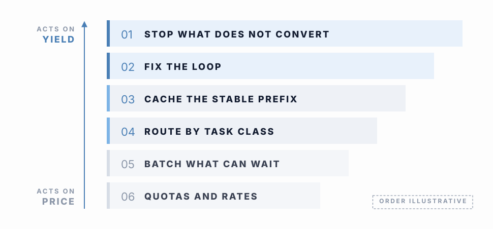
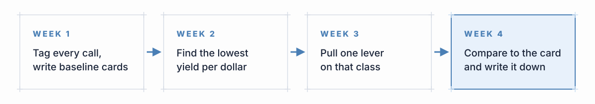

Choosing the measure of improvement
Token count is the easiest number to improve: shorter prompts, a smaller model or a lower cap on retries each reduce spend immediately and appear on the next report, but none of them indicates whether the work still gets done. The Reframe page gave the failure case, in which a model 40% cheaper per token that converts at half the rate raises the cost per accepted outcome above its previous level.
The measure for this stage is yield per dollar (accepted outcomes against spend) for each task class, taken before and after a change, which in the terms used across this hub is AES set against spend. A change that lowers spend while AES holds is a saving; a change that lowers spend while AES falls by more is a loss, even though the invoice shows a reduction.
Levers ordered by effect on yield
The available levers are familiar engineering practices, ordered here by their expected effect on yield rather than by ease of application. This proposed order follows from the earlier pages and has not been measured across workloads.
- Stop work that does not convert. A task class that is not run consumes no tokens, so when a class sits below its yield floor and the Manage signals classify the shortfall as a yield event, pausing the class is preferable to tuning it.
- Fix the agent loop. Stop rules, context hygiene, cleaner tool outputs and sub-agents that return summaries instead of transcripts change how many iterations a task needs and how much each iteration carries. One published result found a 41% cost reduction from harness changes alone, with the model unchanged.
- Cache the stable prefix. Keep system instructions and tool definitions fixed in order and content so that repeated input is billed at the cached rate, which lowers price while leaving the model's input unchanged.
- Route by task class. Send each class to the cheapest model tier that holds its yield, using the Value of Token test to decide when an upgrade is worth it.
- Batch what can wait. Work that does not need an answer in seconds can often run asynchronously at a lower rate.
- Set quotas and negotiate rates. These levers are useful but sit furthest from yield, since they change what each token costs and leave what it produces unchanged.
The top of the ladder acts on yield risk and the bottom on price risk. Under cost pressure, teams tend to start with price levers because they require no change to the work, producing a smaller bill without necessarily changing yield.

Testing one change at a time
Each change should be small enough for its effect to be read: one lever applied to one task class, with yield per dollar for that class compared over a period long enough to cover its normal variation. Changing three things at once across all classes produces a result that cannot be attributed to any of them, which leaves the Review stage without evidence to decide on.
The first 30 days
For a team starting from an invoice and nothing else, a month is enough to complete one turn of the operating loop on a small scale.
- Week 1. Add attribution tags to every call, then pick two or three task classes and write a baseline card for each.
- Week 2. Read the token mix and the accept/reject record per class to find the class with the lowest yield per dollar.
- Week 3. Apply one lever to that class, starting as high on the ladder as the class allows.
- Week 4. Compare yield per dollar against the baseline card and record the result whichever way it went, since that record is the input to Review.

The Instruments page described quality as an O-ring, in which adoption depends on the worst-covered piece of work rather than on the average, so a saving that thins out review or test effort on the story that was already weakest can lower spend and reduce adoption at the same time. Cuts belong in gold-plating, where the quality curve has flattened, and spend in the leverage zone, where the curve is steep, should be protected.
GO DEEPER: why the order puts price levers last
A price lever scales the cost of every token by the same factor, so at best it delivers a proportional saving on spend whose conversion rate stays where it was. A yield lever changes the conversion rate, through fewer rejected iterations, fewer tasks handed back to a human and less output that ships and goes unused. Because AES is a product of three ratios, a modest improvement in the weakest ratio can move AES by more than a large discount moves spend, a result that follows from the arithmetic of the measure. Specified, not yet validated: the size of the effect for a given task class is an empirical question.
Sources
- 1Ali et al. – 41% cost reduction from harness-layer optimization alone, no model change – arXiv:2607.06906
- 2FinOps Foundation, FinOps Framework (rate optimization and workload optimization capabilities) – finops.org/framework